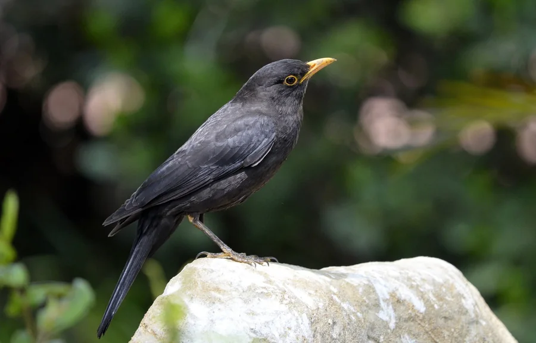
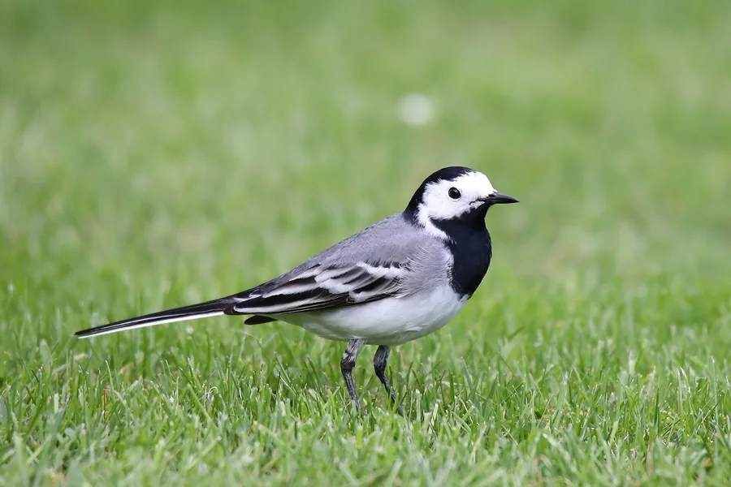

淇澳—担杆岛自然保护区
华南少见的连片红树林湿地，也是珠海最重要的候鸟越冬地。退潮时滩涂上挤满鹭类、鸻鹬，冬季有黑脸琵鹭稳定越冬。进入核心区需预约，外围基围与堤岸可自由观察。
黑脸琵鹭池鹭苍鹭褐翅鸦鹃青脚鹬
最佳：11 月–次年 3 月
Field Guide · Zhuhai & Pearl River Delta
从淇澳岛的红树林到香山湖的荷塘，珠海处在东亚—澳大利西亚候鸟迁飞区的必经之路上。这份手册收录了 65 种在本地有机会遇见的鸟——它们的样子、习性，以及声音。
Ecological Groups
野外观鸟的第一步不是记住每一种鸟，而是判断它属于哪一类。五个类群，对应五种完全不同的生活方式。
This Month
挑的是公园、行道树、滩涂上几乎一定会撞见的那些；最后 4 只是本月才到的候鸟，过了季节就看不到了。完整的 65 种按遇见概率排在名录页。
 NO. 003
NO. 003

NO. 014 NO. 004
NO. 004
 NO. 025
NO. 025
 NO. 021
NO. 021
 NO. 015
NO. 015
 NO. 047
NO. 047
 NO. 006
NO. 006

NO. 005 NO. 007
NO. 007
 NO. 011
NO. 011
 NO. 012
NO. 012
Where to Watch
珠海的海岸线超过 600 公里，滩涂、红树林、水田与城市公园在很小的半径内并存——这意味着一个周末就能横跨三种完全不同的鸟类群落。以下六处是最容易上手的地点。
华南少见的连片红树林湿地，也是珠海最重要的候鸟越冬地。退潮时滩涂上挤满鹭类、鸻鹬，冬季有黑脸琵鹭稳定越冬。进入核心区需预约，外围基围与堤岸可自由观察。
最佳：11 月–次年 3 月
芦苇荡、红树林与鱼塘交织的人工—自然复合湿地，栈道深入水面，是近距离观察水鸟最舒服的地方。清晨与傍晚光线最好。
全年，秋冬水鸟最多
珠三角西岸保存较好的开阔沙滩与泥滩，退潮后数公里滩面暴露，是鸻鹬类与鸥类的主战场。需要望远镜，注意潮汐表。
最佳：10 月–次年 4 月
城市里的综合公园，湖面、湿地与林带俱全。适合初学者：不用走远，一小时能记录十几种鸟，黑水鸡与小鸊鷉几乎必见。
全年
环岛绿道连着海面与山体，退潮时礁石与沙滩上都有惊喜。冬季海面上有成群红嘴鸥，上空常有黑鸢盘旋。
全年，冬季海鸟最盛
典型的岭南农业湿地景观。田埂、水渠与鱼塘构成密集的水网，是池鹭、翠鸟与伯劳的猎场，也是观察「人鸟共处」最好的窗口。
全年，春耕与秋收前后最热闹
Field Ethics
用望远镜或长焦，不靠近、不驱赶、不追逐。繁殖期与越冬期（11–3 月）尤其要保持距离，一次惊飞可能耗尽它们一天的能量。
播放鸟鸣录音会把鸟从领地、巢区或觅食地引开，长期使用会显著降低繁殖成功率。观察野生行为，比拍到「标准照」重要。
面包会伤害水鸟的消化系统；放生外来物种（如巴西龟、家鸭）会破坏本地生态。让它们自己找吃的。
沙滩上的一个小凹坑可能就是一窝卵。保护区的核心区、缓冲区请勿进入，无人机在鸟类栖息地上空属违规行为。
拍照片、记时间地点、上传到公民科学平台，比带走一根羽毛更有价值。所有野生鸟类在中国均受法律保护。
鱼线、塑料袋、废弃口罩对水鸟是致命的。滩涂上的垃圾请顺手带走，这比任何口号都实际。